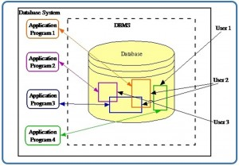
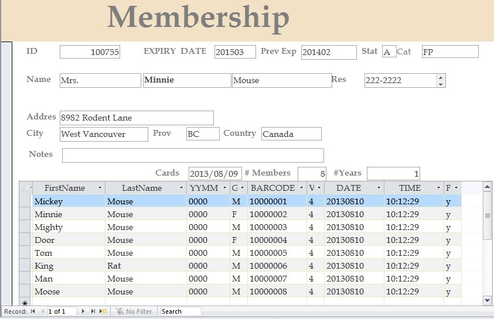
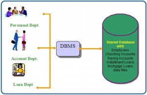

Fundamental Concepts
المفاهيم الأساسية
النص الرئيسي
Key Terms
data elements: facts that represent real-world information
database: a shared collection of related data used to support the activities of a particular organization
database management system (DBMS): a collection of programs that enables users to create and maintain databases and control all access to them
table: a combination of fields
ما هي قاعدة البيانات (database)؟
Exercises
What is a database management system (DBMS)?
What are the properties of a DBMS?
Provide three examples of a real-world database (e.g., the library contains a database of books).
قاعدة البيانات (database) هي مجموعة مشتركة من البيانات (data) المترابطة تُستخدم لدعم أنشطة مؤسسة بعينها. ويمكن النظر إلى قاعدة البيانات بوصفها مستودعًا للبيانات يُعرَّف مرة واحدة ثم يصل إليه مستخدمون مختلفون، كما هو مبيّن في الشكل 2.1.

خصائص قاعدة البيانات
للقاعدة البيانات الخصائص التالية:
- إنها تمثيل لجانب ما من العالم الحقيقي، أو لمجموعة من عناصر البيانات (الحقائق) التي تمثّل معلومات عن العالم الحقيقي.
- قاعدة البيانات منطقية ومتماسكة ومتسقة داخليًا.
- تُصمَّم قاعدة البيانات وتُبنى وتُملأ بالبيانات لغرض محدد.
- يُخزَّن كل عنصر بيانات في حقل (field).
- يتكوّن الجدول (table) من مجموعة من الحقول. فعلى سبيل المثال، يحتوي كل حقل في جدول الموظفين على بيانات عن موظف بعينه.
يمكن أن تحتوي قاعدة البيانات على جداول كثيرة. فعلى سبيل المثال، قد يحتوي نظام العضويات على جدول للعناوين وجدول للأعضاء الأفراد، كما هو مبيّن في الشكل 2.2. وأعضاء Science World هم الأفراد والبيوت الجماعية والشركات والمؤسسات التي تتوفر لها عضوية سارية في Science World. ويمكن شراء العضوية لمدة سنة أو سنتين، ثم تجديدها لمدة سنة أو سنتين أخرى.

في الشكل 2.2، جددت ميني ماوس عضوية العائلة مع Science World. ويعيش جميع من يحملون رقم العضوية 100755 في 8932 Rodent Lane. أما الأعضاء الأفراد فهم: Mickey Mouse، وMinnie Mouse، وMighty Mouse، وDoor Mouse، وTom Mouse، وKing Rat، وMan Mouse، وMoose Mouse.
نظام إدارة قواعد البيانات (DBMS)
نظام إدارة قواعد البيانات (DBMS) هو مجموعة من البرامج تتيح للمستخدمين إنشاء قواعد البيانات وصيانتها والتحكم في جميع أشكال الوصول إليها. والهدف الأساسي لـ DBMS هو توفير بيئة مريحة وفعّالة في الوقت نفسه للمستخدمين لاسترجاع المعلومات وتخزينها.
مع نهج قاعدة البيانات، يمكننا أن نستخدم النظام المصرفي التقليدي المبيّن في الشكل 2.3. وفي هذا المثال المصرفي، تستخدم إدارة الموارد البشرية وإدارة الحسابات وإدارة القروض نظام إدارة قواعد البيانات (DBMS) للوصول إلى قاعدة بيانات الشركة المشتركة.

عناصر البيانات (data elements): حقائق تمثّل معلومات عن العالم الحقيقي
قاعدة البيانات (database): مجموعة مشتركة من البيانات المترابطة تُستخدم لدعم أنشطة مؤسسة بعينها
نظام إدارة قواعد البيانات (database management system, DBMS): مجموعة من البرامج تتيح للمستخدمين إنشاء قواعد البيانات وصيانتها والتحكم في جميع أشكال الوصول إليها
الجدول (table): مجموعة من الحقول
- ما هو نظام إدارة قواعد البيانات (DBMS)؟
- ما هي خصائص نظام إدارة قواعد البيانات (DBMS)؟
- قدّم ثلاثة أمثلة على قاعدة بيانات من العالم الحقيقي (مثل: تحتوي المكتبة على قاعدة بيانات من الكتب).
نسب العمل
هذا الفصل من كتاب Database Design (بما في ذلك الصور، ما لم يُنص على خلاف ذلك) هو نسخة مشتقة من Database System Concepts من تأليف Nguyen Kim Anh، بترخيص Creative Commons Attribution License 3.0 license
كُتبت المواد التالية من إعداد Nelson Eng:
- المثال الوارد ضمن خصائص قاعدة البيانات
- المصطلحات الأساسية
كُتبت المواد التالية من إعداد Adrienne Watt:
- تمارين